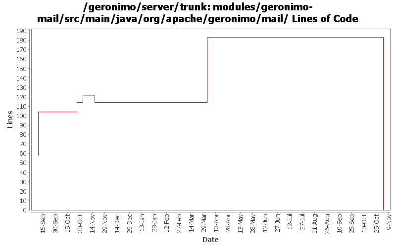

[root]/modules/geronimo-mail/src/main/java/org/apache/geronimo/mail

| Author | Changes | Lines of Code | Lines per Change |
|---|---|---|---|
| Totals | 66 (100.0%) | 290 (100.0%) | 4.3 |
| rickmcguire | 19 (28.8%) | 152 (52.4%) | 8.0 |
| dain | 1 (1.5%) | 72 (24.8%) | 72.0 |
| jlaskowski | 8 (12.1%) | 48 (16.6%) | 6.0 |
| akulshreshtha | 16 (24.2%) | 18 (6.2%) | 1.1 |
| prasad | 10 (15.2%) | 0 (0.0%) | 0.0 |
| kevan | 12 (18.2%) | 0 (0.0%) | 0.0 |
GERONIMO-3565. Modules distributed amongst framework/modules and plugins
0 lines of code changed in 10 files:
GERONIMO-2972: Bind JavaMail Session to Global JNDI
Thanks Christopher M. Cardona
72 lines of code changed in 1 file:
GERONIMO-2607 reverted 485524
9 lines of code changed in 8 files:
GERGERONIMO-2607 Updated all GBeans to use new GBeanInfoBuilder.addOperation(..) method
9 lines of code changed in 8 files:
GERONIMO-2537 Update the src headers in server/trunk/modules to be compliant with the new ASF src header and copyright policy (http://www.apache.org/legal/src-headers.html). I also did some cleanup of the src headers and tried to make them all a consistent format
0 lines of code changed in 12 files:
Partial fix for GERONIMO-2537 All Geronimo source files must be brought in line with the new ASF source header and copyright notice policy
The modules directory is supposed to be migrated. There're some issues with some files, but they'll be handled manually
48 lines of code changed in 8 files:
GERONIMO-2520 The ProtocolGBeans not handling Boolean properties correctly in addOverrides().
96 lines of code changed in 6 files:
GERONIMO-2519 ProtocolGBean ignoring the properties attribute.
10 lines of code changed in 1 file:
Merge GERONIMO-1754 from DEAD-1.2 branch.
46 lines of code changed in 12 files: